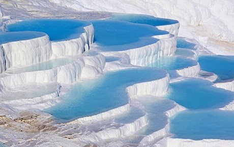

Pamukkale Travertenleri
Denizli’de bulunan Pamukkale Travertenleri, sıcak su kaynaklarının doğal yollarla traverten yataklarına gelerek yüzeye çıkması ile oluşmaktadır. Sıcak su burada travertenlerin katmanlarına dökülerek çeşitli çökelmeler yapar. Kalsiyum ve hidrokarbonatça oldukça zengin olan bu sıcak su, 356 derecededir ve havayla temas ettiğinde bir dizi kimyasal değişim sonucu karbonat çökeltileri oluşturarak beyaz renk ve sert bir zemin oluşturur. Pamukkale çevresindeki sıcak termal suların kaynağı bölgedeki fay hatları ve jeolojik olaylardır. Bölgede 35-100 derece aralığında sıcaklıklara sahip 17 adet sıcak su alanı yer almaktadır. Pamukkale kaynağı çok eski çağlardan hatta antik devirlerden beri kullanılmaktadır. Kaynaktan çıkan termal su 320 metre civarındaki bir mesafeyi kat ederek traverten başına gelir. Buradan da traverten katmanlarına dökülerek 240-300 metre kadar yol kat etmektedir. Buradaki kat kat görünümü oluşturan kimyasal tepkimeler dizisinde çökelen kalsiyum karbonat başlangıçta jel halinde bir yapıdadır. Zamanla sertleşen bu jelimsi yapı, traverten halini almakta ve pek çok turistin ilgisini çekmektedir.